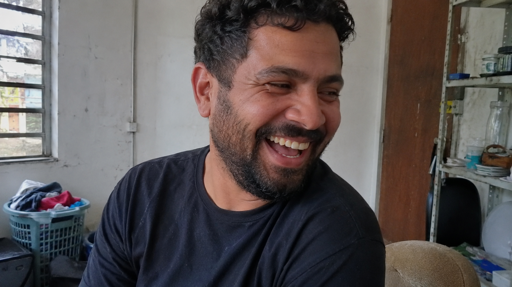

← BACK TO DOSSIERS LIST
REALISM CASE FILE // TREND: HOW TO PROMPT NATURAL EXPRESSIONS IN AI MODELS INSTEAD OF FAKE SMILES
Photo-Realism Calibration: Capturing Authentic Laughter Without Default AI Aesthetics
DATE: 2026-07-18
STATUS: CALIBRATED_REALISM
ENGINE: CHATGPT DALL-E 3

SPECIMEN IMAGE #16:9 - CLEAN OPTICS
Many image models still default to the same visual recipe: symmetrical faces, polished skin, perfectly timed smiles, and stylized lighting that rarely resembles an actual photograph. A candid image of a man laughing is a useful test case because authentic laughter exposes details that artificial aesthetics often suppress, including asymmetrical facial tension, irregular eye crinkles, and the subtle imperfections that make a moment feel genuinely observed rather than generated.
In the analysis below, we break the scene into physical layers that govern realism: subject behavior, environment, physics, time, and camera response. Yet the deeper mechanism behind convincing camera-grade simulation is not hidden in rendering settings alone. The real leverage comes from language-level calibration. Small lexical substitutions can dramatically alter how a model interprets reality, and the calibration console at the end of the dossier reveals why these shifts matter more than most prompt writers realize.
The lexicon shift process replaces abstract aesthetic shortcuts with observable physical evidence. Terms such as "perfect skin" become descriptions of pores, tonal inconsistency, and localized texture variation. "Cinematic lighting" becomes uncontrolled daylight interacting with practical architecture. Technical calibration also benefits from documenting optical limitations, compression behavior, focus instability, and natural asymmetry. These metrics encourage models to simulate information loss, environmental complexity, and human irregularity instead of defaulting toward beautification.
This returns us to the original problem: repetitive AI aesthetics emerge when prompts describe ideals instead of observations. By grounding language in measurable visual behavior, creators can produce images that feel captured rather than designed. For a deeper framework on photo-realism calibration, camera-grade prompting, and advanced lexicon engineering, explore ALPHA REALISM. The complete methodology, calibration workflows, and realism scoring systems are available through ALPHA REALISM for creators seeking higher-fidelity visual authenticity.
The 5 Layers of Reality Applied
Subject:
An adult man captured during a spontaneous laugh, head turned slightly away from the camera, natural crinkles forming around the outer corners of the eyes, asymmetrical smile tension, uneven cheek compression, relaxed shoulders, candid body language, ordinary grooming, subtle facial texture variation, realistic skin tone shifts, non-performative expression timing, physically believable posture imbalance.
Environment:
Available daylight entering through a nearby window, uneven illumination across the face, brighter exposure on one side of the head, soft ambient shadow transitions, realistic highlight clipping on reflective surfaces, practical indoor background with ordinary visual clutter, uncontrolled lighting distribution, observational documentary atmosphere.
Physics:
Facial muscles compress naturally during laughter, cheeks rise unevenly, eyelids narrow asymmetrically, gravity influences posture and clothing folds, subtle head rotation alters light reflection patterns across skin, fabric responds to body movement with irregular wrinkle formation, realistic optical reflections from nearby surfaces.
Time:
Minor signs of daily wear visible in clothing folds, slight texture fatigue in fabric, natural skin variation, faint under-eye texture, ordinary environmental aging, subtle dust accumulation on background surfaces, non-pristine real-world conditions, evidence of lived-in surroundings.
Camera:
Smartphone-grade documentary capture, mild HDR flattening, slight edge softness, inconsistent microcontrast, realistic sensor grain, subtle compression artifacts, imperfect focus acquisition, weak depth separation, natural highlight recovery limitations, handheld framing behavior, non-cinematic optical rendering.
The Lexicon Shift Table
| Appearance (Dead Adjective) |
|
Living Event (Cause & Effect) |
| perfect skin |
➔ |
skin texture showing subtle pores, uneven reflectivity, and localized tonal variation under available light |
| cinematic lighting |
➔ |
uncontrolled daylight entering through a window with uneven illumination and soft ambient shadow falloff |
| genuine smile |
➔ |
asymmetrical laughter causing natural eye crinkles, cheek compression, and uneven facial muscle engagement |
| sharp portrait |
➔ |
smartphone capture with slight edge softness, realistic focus inconsistency, and compression-limited detail retention |
| professional composition |
➔ |
candid framing with minor imbalance, observational perspective, and non-performative subject positioning |
Calibration Prompt Console
SUBJECT: adult man laughing naturally during an unscripted moment, head turned slightly away from camera, authentic crow's-feet around the eyes, asymmetrical smile tension, uneven cheek compression, ordinary grooming, realistic skin texture, subtle facial asymmetry, relaxed shoulders, candid posture, non-performative body language. ENVIRONMENT: practical indoor setting, available daylight from a nearby window, lived-in surroundings, mild background clutter, observational documentary atmosphere, uncontrolled lighting distribution, realistic shadow transitions, ordinary real-world visual density. PHYSICS: natural facial muscle contraction during laughter, gravity-dependent posture shift, realistic fabric deformation, uneven wrinkle formation in clothing, authentic reflections, physically plausible eye narrowing, natural head rotation affecting illumination. TIME: slight fabric wear, subtle texture fatigue, ordinary environmental aging, non-pristine surfaces, realistic signs of daily use, natural human imperfections preserved. CAMERA: smartphone-grade documentary photography, handheld capture, mild HDR flattening, slight edge softness, realistic sensor grain, weak depth separation, imperfect focus acquisition, subtle JPEG compression artifacts, non-cinematic optics, natural exposure behavior, authentic digital limitations, prioritize realism over beautification, preserve observational imperfections, preserve candid timing, avoid glamourization, avoid editorial aesthetics --ar 16:9
Do you want to generate precise AI images?
Unlock our alpha realism blueprint, physical reliable framework to get the best of your creations with the ALPHA REALISM Guide.
Download Ebook Now